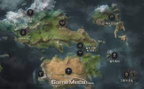
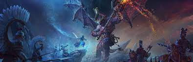
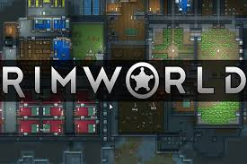
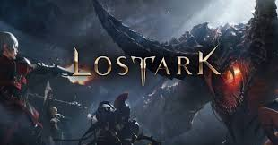

전체글

리그 오브 레전드 세계관
리그 오브 레전드 유니버스에는 룬테라를 배경으로 하는 물질 세계, 요들과 정령 등의 고향인 영혼 세계, 천상의 존재들이 있는 천상계 등이 있다. 다른 차원 또는 외계행성에서 온 공허태생도
있다.
룬테라는 룬 마법으로 태어난 땅이라서 지역 곳곳에 마력이 만연하다. 그리하여 특이한 마법 생물들이 살고 있으며, 마법과 마법사들이 존재한다. 보통 선천적으로 마력을 가지고 태어난 사람들이
마법사가 된다. 특별한 도구를 사용하여 마법을 사용하거나, 순수하게 마법을 연구하고 수련해서 마법사가 되는 경우도 있다. 마법에 재능이 없어도 자본이 있으면 필트오버의 마법공학을 이용해
마법을 사용할 수도 있다. 아이오니아는 다른 지역보다 마력이 더욱 많이 존재하여 다른 지역에서는 볼 수 없는 다양한 형태의 마법과 생물군이 존재한다. 마법을 접목한 무술과 병기술도 여럿
있는데, 닌자인 제드는 그림자 마법을 사용하고, 리븐이나 야스오가 사용하는 바람의 검술은 바람 원소 마법이 담긴 검술이다.
다만 챔피언들 중 마법 사용자들의 비율과 달리 룬테라에서 마법은 상당히 희귀한 재능이다. 사일러스의 혁명 당시 나온 마법사가 잘쳐야 수백 명인데, 마력척결관의 철저한 조사에도 불구하고
전체 마법사 중 1할만이 체포되었다고 넉넉하게 가정해도 데마시아 내의 마법사는 수천 명에 불과하다. 비옥한 토지로 인해 인구가 수백만, 수천만에 달할 것으로 추정되는 데마시아에서 선천적
마법사는 고작 그 정도 뿐이며, 녹서스에선 마법을 가지고만 있다면 곧바로 출세할 수 있을정도로 마법을 높게 쳐주는데도 그 수가 부족하여 국경 밖에서까지 마법사를 찾을 정도이다.

토탈워 워해머3
암울한 암흑에 휩싸인 머나먼 미래, 오직 전쟁만이 있을 뿐. 오직 전쟁과..광기로 채워진..우리 은하계에서 벌어지는 워해머의 이야기멀고도 먼 옛날.
인류가 생겨나기도 전인 고대에 네크론티르라는 종족이 살았어. 이들은 눈부신 기술발전으로 은하계 곳곳으로 퍼져나가 번영하고 있었지. 하지만 무릇,
고등 지성체들은 집단으로 나뉘어져 갈라지면 내분을 일삼는 법. 네크론티르들의 귀족들은 자기들만의 세력을 부풀리기 위해 서로 내전을 일삼기 시작했지.

림월드
알지 못하는 행성에 표류하게 된 3~4인의 우주인들. 그곳을 빠져나가기 위해 또는 생존을 위해, 그들은 각자의 능력을 최대한 살려 해쳐나가야 한다. 그러나, 그 행생의 주인은 따로 있었으니

월드 오브 땅크
전차 액션 게임이기 때문에 정교한 고증을 지키는 밀리터리 게임은 아니다. 월드 오브 탱크는 어디까지나 전차 액션 게임이지 시뮬레이션 게임이 아니다.
오버워치2
오버워치만의 특색 있는 영웅 중 한 명이 되어 돌격을 진두지휘하거나, 적을 기습하거나, 아군을 지원해 보세요.
다양한 영웅이 되어 실제 지역을 바탕으로 하는 24개의 미래 전장을 누비고 각종 게임 모드의 달인으로 거듭나세요.

로스트 아크
태초의 세상은 혼돈이었다. 하지만 규칙이 만들어지면서, 혼돈이었던 세상은 질서의 세계와 무질서의 세계로 갈라진다.
질서의 신 루페온은 불완전함 속에 자리잡은 자신의 세계에 여러 가지 규칙들을 만들어내기 시작했다. 루페온은 대우주 오르페우스를 창조하고 공간을 메울 별을 만든 뒤, 절대 꺼지지 않을
태초의 빛 아크를 이용해 태양을 띄웠다.
그러나 무한한 태양과는 달리 별은 유한하여 생성되고 소멸되길 반복했다. 질서는 생명을 창조하였으나 죽음이란 그림자 또한 만들어 버린 것이다. 불완전한 질서의 세계를 관망하던 혼돈의 신
이그하람은 무한한 생명을 가진 아크에 흥미를 가지기 시작했다.
소멸하지 않는 아크야말로 혼돈의 결정체라 생각했던 이그하람의 시선은 아주 오랜 시간을 거쳐 서서히 탐욕으로 변하게 되었다.